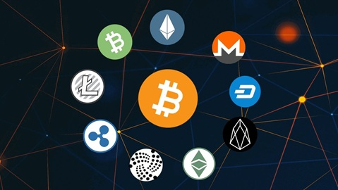

Altcoins Explained
Altcoins, short for “alternative coins,” refer to all cryptocurrencies other than Bitcoin. They were created to improve upon or offer alternatives to Bitcoin’s design by introducing new features, technologies, or use cases. Some altcoins, like Ethereum, enable smart contracts and decentralized applications, while others focus on scalability, privacy, or interoperability—examples include Solana, Monero, and Polkadot. Altcoins often serve specialized roles within their respective ecosystems, powering decentralized finance (Defi) platforms, governance systems, and payment networks.

For investors and traders, altcoins represent opportunities for diversification and innovation but also come with higher risk due to market volatility and varying levels of adoption. Their values are influenced by factors such as technological progress, developer activity, real-world utility, and community support. While Bitcoin remains the benchmark for the crypto market, altcoins drive much of the industry’s evolution by experimenting with new ideas that push blockchain technology forward.
Binance Academy